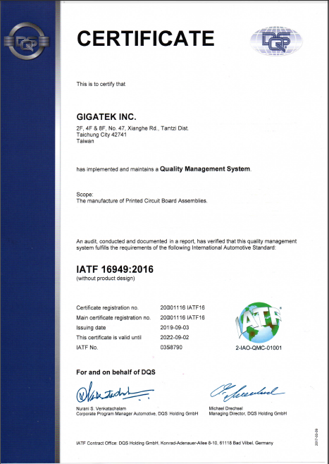

<script src="header.js"></script>

<main class="news-d">

<div class="inner">

	<div class="news-d-t">
		<div class="news-d-n">GIGATEK passes certification for IATF 16949:2016 Automotive Quality Management System Standards</div>
		<div class="news-d-d">2019-09-03<span class="publisher"><i class="fas fa-pen-nib"></i>Chih-Chuan, Chen</span></div>
		

	</div>
	<div class="news-d-i">
		<p>
			GIGATEK INC. announced that it has passed the certification for IATF 16949:2016 Automotive Quality Management System Standards by UL DQS Taiwan Inc. in September 2019 for automotive electronics manufacturing. Through the concerted effort of all employees, GIGATEK constantly optimizes and refines its quality management systems and processes. In addition to meeting the standards and requirements, it touches customers through excellent services and experiences while cultivating the automotive electronics market to create a win-win situation for all. 
		</p>
		<p>
			<div class="title">About IATF 16949: 2016</div>
			 IATF 16949:2016 defines the requirements of a quality management system for organizations in the automotive industry and was developed by International Automotive Task Force (IATF) based on the framework of the ISO 9001:2015 Quality Management System. It is applicable to organizations of automotive manufacture, production parts, and servicing parts, especially the automotive manufacturers and organizations which produces related automotive materials as well as assembly parts, or provides heat treatment, welding, electroplating, coating or related services for the automotive industry	
			 <br><br>
			 According to the official guide published by Automotive Industry Action Group (AIAG), the first step to the best quality road for the automotive industry is 5 core tools, including APQP, PPAP, FMEA, SPC, and MSA. The five Automotive Quality Core Tools are the building blocks of an effective quality management system.
			 <br><br>
			 For details about IATF16949:2016, visit&nbsp;&nbsp;<a href=" https://www.iatfglobaloversight.org/iatf-169492016/about/" target="_blank"> https://www.iatfglobaloversight.org/iatf-169492016/about/</a>
		</p>

		<a class="venobox" href="public/SRC/images/news/IATF16949_2016_GIGA.png"></a>
	</div>
	<a href="news.php" class="btn">Back</a>
</div>

</main>

<nav class="bread">

	<div class="inner">

		<a href="index.php">Home</a><span class="bread-space">/</span><a href="news.php">NEWS</a>

	</div>


</nav>

<script src="footer.js"></script>